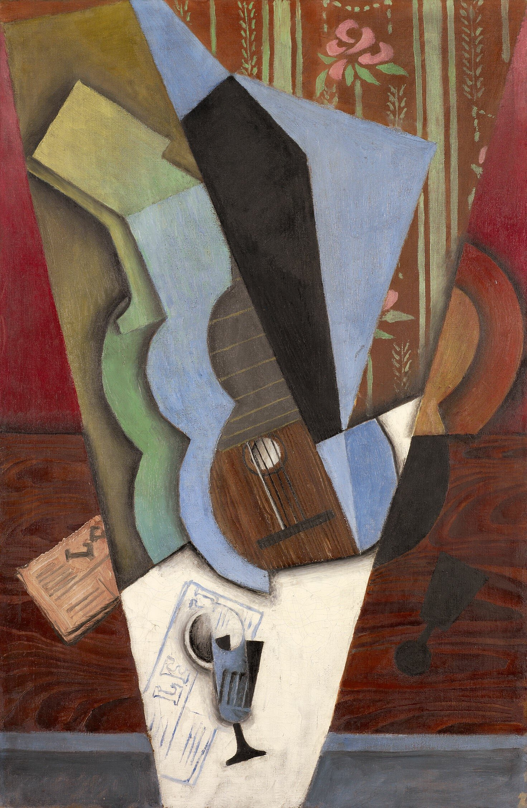

Blue opens the outline. Strings bring the familiar back.
The black diagonal gives direction. Blue-green contours return the eye.
Gray-blue meets warm wood brown; neighboring blue and green soften the cut.
Local volume, an overall flatness. White lifts the glass; black anchors the center.
Suggested palette and ratios; not measured from the painting.
Oil on canvas with a collage-like effect. Wood grain gives geometry a tactile pulse. [2]
Gris, 1887–1927. Moved to Paris in 1906 and contributed to Cubism. [2]
Space comes apart. Strings remain. Our eyes reconnect a familiar world.
Set direction with a diagonal; pause with a curve.
35% brown + 30% blue + 10% green + 15% charcoal + 10% cream.
Keep one recognizable detail. Check at phone size.
Suggested palette and ratios; not measured from the painting.
Juan Gris · Abstraction (Guitar and Glass) 1913 · Art Institute of Chicago · 1961.36
Rights remain with the creator where applicable. File page: US public domain. Museum data: not confirmed. No CC0 claim. See essay for the source discrepancy. Image via Wikimedia Commons; original source: museum.
![[3] Image source and public-domain statement](https://commons.wikimedia.org/wiki/File:Juan_Gris_-_Abstraction_(Guitar_and_Glass)_(1913).jpg){kind=link}